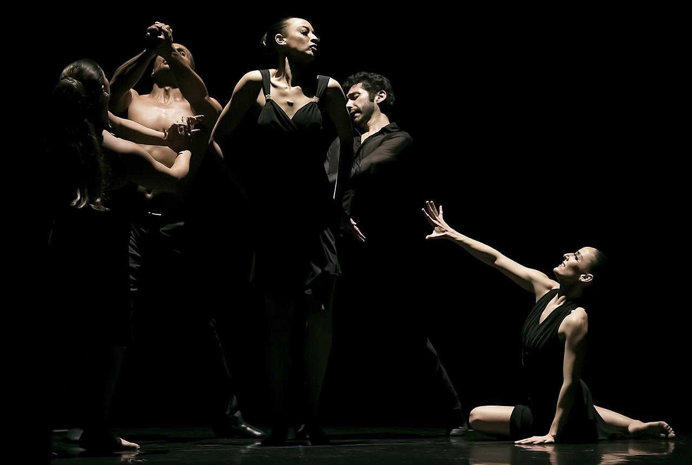

S
H
O
W
S
.jpg) Un espectaculo que quema traen consigo las memorias antiguas del pasado sagrado a nuestro presente. Quieren recuperar antiguas recetas del secreto de la felicidad. La fuerza oscura se entera y quiere apoderarse de este secreto tan valioso. Éstas realizarán movimientos sinuosos y con mucho encanto. Entregan su danza a lo divino utilizando sus cuerpos y el fuego para crear increíbles mandalas en movimiento.
Atrapan al espectador en un viaje fascinante y ancestral.
Un espectaculo que quema traen consigo las memorias antiguas del pasado sagrado a nuestro presente. Quieren recuperar antiguas recetas del secreto de la felicidad. La fuerza oscura se entera y quiere apoderarse de este secreto tan valioso. Éstas realizarán movimientos sinuosos y con mucho encanto. Entregan su danza a lo divino utilizando sus cuerpos y el fuego para crear increíbles mandalas en movimiento.
Atrapan al espectador en un viaje fascinante y ancestral.
.jpg) ¿No te ha pasado escuchar a alguien cantar y se te eriza la piel? Según explican, la música es uno de los detonantes más potentes para que la piel se ponga "de gallina". En otras ocasiones sucede al enfrentarnos a emociones muy intensas, tanto placenteras como de miedo.
Aunque en el caso de la música no a todos les sucede y existe una explicación. Sentir que la piel se eriza al escuchar música, en especial cuando se trata de un estilo más emotivo, es porque se posee una inteligencia emocional mayor que la de las personas que no experimentan esta sensación.
¿No te ha pasado escuchar a alguien cantar y se te eriza la piel? Según explican, la música es uno de los detonantes más potentes para que la piel se ponga "de gallina". En otras ocasiones sucede al enfrentarnos a emociones muy intensas, tanto placenteras como de miedo.
Aunque en el caso de la música no a todos les sucede y existe una explicación. Sentir que la piel se eriza al escuchar música, en especial cuando se trata de un estilo más emotivo, es porque se posee una inteligencia emocional mayor que la de las personas que no experimentan esta sensación.

Ahora imagina sentir la energia de una musica e interpretarla con movimientos Son dos tipos de energía que conciernen al estudio de la danza, una es la obvia o energía física que se usa para el movimiento de músculos y huesos y la otra es la psíquica que es la que da la vitalidad al movimiento del bailarín y le proporciona un sentido en el que no es sólo físico.